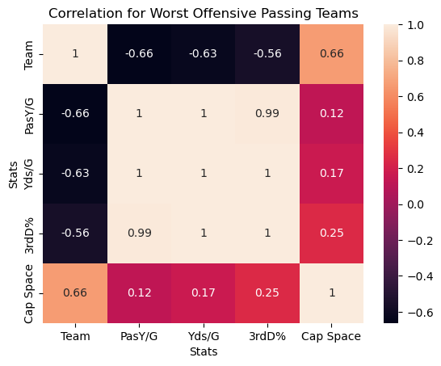

Backstory
As many American football fans will tell you, the NFL offseason is almost as exciting as the playoffs.🏈 Rumors, extensions, trades, and signings run rampant! So, I thought it might be fun to play 'General Manager' and help some of the most position-deprived teams target their top free agent signings.
Using Jupyter Notebook and some key libraries and modules like (Pandas, NumPy, requests, BeautifulSoup, reduce, Matplotlib, and Seaborn), my goal is to review the 2023 regular season statistics and active free agents available. I want to identify the worst offensive and defensive teams in the league, their available cap space (free cash to spend), and the free agent players who are the best at their positions.
DISCLAIMER: The free agents included in this project were unsigned by a team at the time the data was obtained. Furthermore, the analysis only takes a limited view of available information. For instance, if the statistics lead me to suggest signing a quarterback for a team, I am not accounting for any draft selections or players on the roster who may have not played last year.
*COUGH* Aaron Rodgers *COUGH* 🤷♂️
Preparing the Data
To get the data I need, I utilized web scraping in Python, in addition to downloading a CSV file that will later be read into my kernel. The sources of my NFL free agency picker are as follows:
Salary Cap
The first thing I tackle is grabbing the available salary cap for each team. Granted, these numbers change fast with restructured contracts and cap casualties, but it'll work for what I need. After starting a new kernel within Jupyter, I begin the process.
import requests
from bs4 import BeautifulSoup
import pandas as pd
cap_url = "https://overthecap.com/salary-cap-space"
cap_page = requests.get(cap_url)
cap_soup = BeautifulSoup(cap_page.text, 'html')
Thanks to BeautifulSoup, Pandas, and a compilation of for loops, I whittle down the page into a new dataframe containing all 32 NFL teams and their cap space. However, before I move on, I perform some cleanup and change the cap data type after removing non-numeric characters.
Team Statistics
Next up, it's time to grab the offensive and defensive statistics for each team.
Using the same methods as I did with the salary cap dataframe, I scrape the 2023 regular season stats from Yahoo Sports. Separating offense and defense into separate dataframes, I now have the stats needed to determine each team's weakest positions.
Free Agent Rankings
My last data source is a CSV file downloaded from PFF. It's a filtered list of unsigned free agents, their player position, and PFF rank determined by their own metrics.
Finally, with whispers of possible moves at the start of free agency, I export each newly created dataframe for future use. If you're an NFL junkie like me, you know how quickly things change this time of year!
Selecting Free Agents
To help these teams pick the best free agent for their money, I want to start segmenting the available players. Specifically, I want to assign a label of either Offense or Defense. In addition, I need a list of all the positions in their abbreviated format.
# Which positions are listed in dataframe?
avail_fa['Position'].unique()
# Output
array(['DI', 'QB', 'ED', 'WR', 'T', 'CB', 'LB', 'S', 'G', 'HB', 'TE', 'C'],
dtype=object)
# Add offense or defense label to dataframe
import numpy as np
dpos = np.array(['DI','ED','CB','LB','S'])
pos_values = np.where(avail_fa['Position'].isin(dpos),'Defense','Offense')
avail_fa['Type'] = pos_values
Next, I dive into the team statistics to find the worst ranked teams in various specialties. My thinking is to segment the defense into two subsets, and the same for the offense. I'll group the defensive linemen and linebackers into one group, and cornerbacks and safeties into another. For offense, I'll group the offensive linemen and runningback into a rushing category, and the quarterback, tight end, and wide receivers into a passing category.
For you NFL fans, you may find some fault in this. It's true, there's plenty of logic pointing to these positions being interchangeable within the groupings. But for simplicity sake, I'll keep it generic. With that said, I take the bottom 10 teams in each statistical category, and use functools to create 4 new dataframes where a team is found in each positional category.
# Worst 10 teams subsets for each metric
top_rushing_allowed = defense[['Team','RushYds/G']].sort_values(by = 'RushYds/G', ascending = False)[:10]
top_sacks_made = defense[['Team','Sack']].sort_values(by = 'Sack', ascending = True)[:10]
top_points_allowed = defense[['Team','Pts/G']].sort_values(by = 'Pts/G', ascending = False)[:10]
top_passing_allowed = defense[['Team','PassYds/G']].sort_values(by = 'PassYds/G', ascending = False)[:10]
top_int_made = defense[['Team','Int']].sort_values(by = 'Int', ascending = True)[:10]
# Identify teams with worst defensive metrics affecting Defensive line and linebackers
from functools import reduce
worst_def_front_stats = [top_rushing_allowed, top_sacks_made, top_points_allowed]
worst_def_front = reduce(lambda left, right: pd.merge(left,right, on='Team', how = 'inner'),
worst_def_front_stats)
I run the same code for the other defensive category, and both offensive sets.
I want to add to my new subset dataframes but I notice that the NFL team names are listed differently in the salary table. For example, the Philadelphia Eagles are labeled as 'Eagles' in the salary df, and just 'Philadelphia' from the original stats data. After utilizing the .replace function, I add the team cap space into my most recent dfs.
A quick visual analysis
Because I'm curious, I decide to run a simple correlation on the worst offensive passing teams. I'm wondering if I notice any surprising indicators between the various metrics that warrant further analysis.
To do this, I first have to temporarily change the data type of the team names, replacing them with category codes. Otherwise, I can't use them in my correlation matrix. After that, I import Matplotlib and Seaborn to create a correlation heatmap. I'm glad I took the extra step for my own peace of mind, but given the size of the sample and results, there doesn't seem to be anything I didn't already anticipate.

Back to the picker
The next step of my analysis is to set the foundation for the free agency picker by identifying the position group needed for each team and adding it to the appropriate dataframe. Here, you'll see the code constructed for worst defensive front df. The other tables used a similar methodology except the median being replaced with the mean.
sack_median = worst_def_front['Sack'].median()
rushyds_median = worst_def_front['RushYds/G'].median()
# Define a function to apply the condition check
# Check if 'Sack' < 30, or 'RushYds/G' is > than the median and 'Sack' < the median
def check_condition_front(row):
if (row['Sack'] < 30):
return 'Line Help'
elif ((row['RushYds/G'] > rushyds_median) and (row['Sack'] < sack_median)):
return 'Line Help'
else:
return 'Target Linebacker'
worst_def_front['Assessment'] = worst_def_front.apply(check_condition_front, axis=1)
Everything is looking good so far! Now, I'll take all the new dataframes and merge them into one using the reduce module again, sorting the output by the salary cap space in descending order. This way, those teams with the most cash to spend, will have first pick of free agents. We all know that's not always how it works in this business, but let's roll with the assumption that these players are looking to cash in. 🏦💰
Next, I add a new column to my final dataframe, labeled 'Target' and set the value to None. This is the placeholder for the signed free agent. In addition, I add a column, labeled 'Available', to the free agents dataframe and set the value to True. As a player is signed by a team, the value should change to False, making them no longer an option for other Teams.
Final Result of the NFL Free Agent Picker
With the groundwork set, I only need one final bit of code to make this puppy purr. The first part will assigned a mapping variable to indicate a position to the target recommendations determined by the stats.
position_group_mapping = {
'Target Linebacker': ['LB'],
'Cornerback': ['CB'],
'Offensive Line': ['T', 'C', 'G'],
'Quarterback': ['QB'],
'Line Help': ['DI', 'ED'],
'Safety help': ['S'],
'Running Back': ['HB'],
'Skill Position': ['WR', 'TE']
}
The final code iterates through the target_free_agents df containing the teams, and selects the best available free agent in the corresponding df.
# Iterate through the rows of target_free_agents df
for index, row in target_free_agents.iterrows():
# Get the target positions for the current team's target position group
target_positions = position_group_mapping.get(row['Assessment'], [])
# Find the first available free agent that matches one of the target positions
available_free_agents = avail_fa[(avail_fa['Position'].isin(target_positions))
& (avail_fa['Available'])]
if not available_free_agents.empty:
# Select the first available free agent
selected_free_agent = available_free_agents.iloc[0]
# Assign the selected free agent to the team
target_free_agents.at[index, 'Target'] = selected_free_agent['Player']
# Mark the selected free agent as unavailable
avail_fa.at[selected_free_agent.name, 'Available'] = False
I run the code, and voila!
NFL Free Agent Picker
| Team |
Type |
Cap Space |
Assessment |
Target |
| Washington |
Defense |
91542471 |
Target Linebacker |
Patrick Queen |
| Washington |
Defense |
91542471 |
Cornerback |
Kendall Fuller |
| New England |
Offense |
85326475 |
Offensive Line |
Tyron Smith |
| New England |
Offense |
85326475 |
Quarterback |
Kirk Cousins |
| Arizona |
Defense |
56632512 |
Line Help |
Chris Jones |
| Philadelphia |
Defense |
42959107 |
Safety help |
Kamren Curl |
| Las Vegas |
Offense |
41605109 |
Running Back |
Saquon Barkley |
| Las Vegas |
Offense |
41605109 |
Skill Position |
Mike Evans |
| NY Giants |
Defense |
38288933 |
Target Linebacker |
Frankie Luvu |
| NY Jets |
Offense |
20705353 |
Offensive Line |
Trent Brown |
| NY Jets |
Offense |
20705353 |
Quarterback |
Baker Mayfield |
| Carolina |
Defense |
11911547 |
Line Help |
Christian Wilkins |
| LA Chargers |
Defense |
-21144997 |
Safety help |
Xavier McKinney |
Behind the Scenes
That was fun! But if you'd like to take a closer look at all the code, click the link below!
My GITHUB

COVID-19 Reporting Analysis
Thanks to the multitude of initiatives focused on understanding the impacts of the COVID-19 virus, there is no shortage of data available. So, why not start from the beginning and see how COVID has affected the hospital system and patients on a granular level?
Learn more

Regional Supermarktet Sales
Using a combination of SQL and Tableau, I take a dive into supermarket sales and inventory data over a four year period. Let's see who has risen to the top!
Learn more